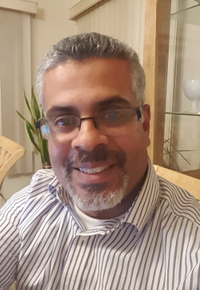

About Me
My name is Francisco Fabian Flores. I am a highly motivated and ambitious full stack web developer who arises to the challenge to meet and exceed corporate objectives. Computer programming has always been a passion for me, as it provides a way to technologically solve everyday problems in a wide range of areas. I majored in Computer Science at Harvard University (1995). Upon graduation, I worked as programmer for a several years at The Prudential and at the University of Wisconsin Madison.
Then, I started and successfully managed a small cybercafe business for nearly ten years. My leadership and organizational skills, as well as the ability to work in a small team environment, were important in developing and evolving the cybercafe. From a technical standpoint, this endeavor involved, among other duties, configuring and maintaining a linux based router to efficiently manage network traffic, and interconnecting PC’s, video game consoles and printers. Throughout this experience, I employed software solutions, such as building scripts and performing local database queries, to simplify routine tasks. Having worked in this IT related position also allows me to appreciate and understand the complexities of the server side part of full-stack.
With a very good performance at a recent coding bootcamp course I took at Rutgers University, I am ready to pursue a career in full-stack web development. This intensive program allowed me to obtain crucial and timely skills in this ever-evolving field, such as javascript, nodejs, and to build projects using firebase, MySQL, and the MERN stack.